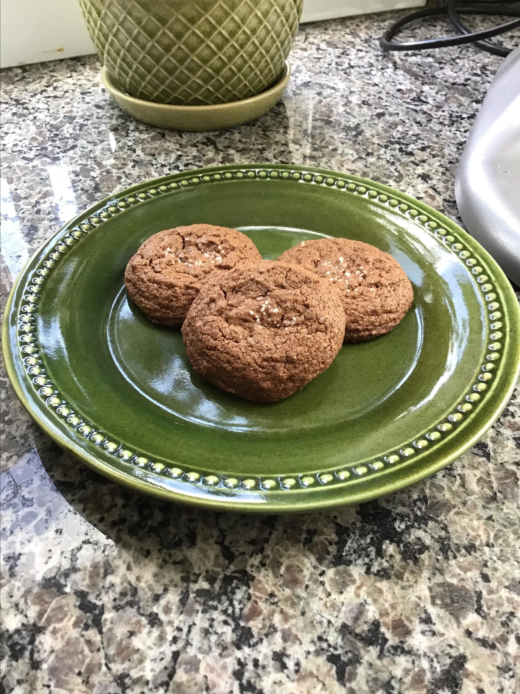

Chocolate Cookies

Ingredients
- 1¼ cups margarine, softened
- 2 cups white sugar
- 2 eggs
- 2 teaspoons vanilla extract
- 2 cups all-purpose flour
- ¾ cup unsweetened cocoa powder
- 1 teaspoon baking soda
- ⅛ teaspoon salt
- 1 cup chopped walnuts
- Preheat oven to 175oC
- In a bowl, mix the margarine and sugar until smooth.Add eggs one at a time, then the vanilla. Add the flour, cocoa, baking soda and salt into the mixture intil blended. Mix in the walnuts and place mixture in spoonfuls onto ungreased cookie sheet.
- Bake for 8 to 10 minutes in oven. Cool after taking out on wire racks.
Recipe from allrecipes.